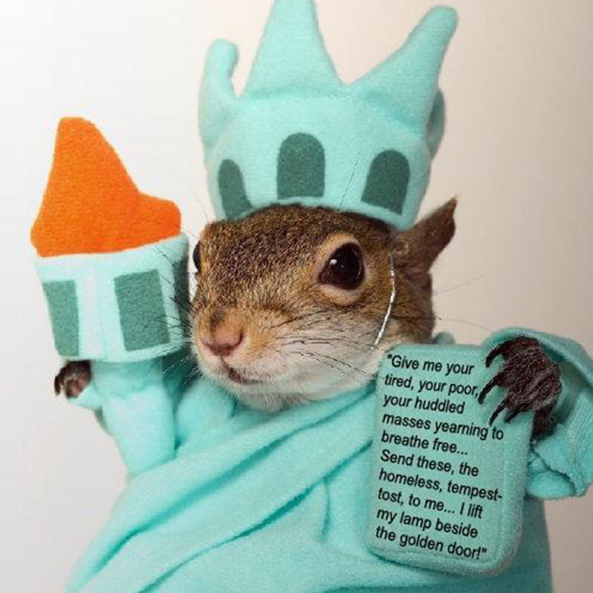

About Me
-
(Bingqian·Liu)网站目标与期望
1)帮助吃点啥工作室进行有效的形象宣传、工作室风采展示、工作室成果宣传展示，打造“吃点啥工作室”的新形象。 为广西艺术学院南湖校区师生解决午餐选择困难的问题，建立有效的餐食随机选择转盘模块、餐食排名星级推荐、时间日期提示，打造“终结选择困难症吃饭难问题”的全新的产品形象。
2) 充分利用网络快捷、宣传传播范围广、不受时空限制、以及网络宣传拥有最有活力的消费群体，网络宣传制作成本低，速度快，更改灵活，网络宣传的受众关注度高等优势进行信息传递，对吃点 啥工作室进行及时的报道。
3) 通过网络平台对吃点啥工作室的成果进行介绍，展示吃点啥工作室的实力。
4) 为吃点啥工作室提供网上平台，增进吃点啥工作室内外信息互通、经验交流。 -
（Yafang·Liu）主要栏目及网站管理
吃点啥网站栏目结构如上图所示。栏目规划充分考虑到建设网站的需求。网站内容及结构框架设计上力求体现简捷性与人性化的思想，在功能设计上突出吃啥转盘模块。 页面的设计将充分体现吃点啥随机选餐网站的形象，在框架编排、色彩搭配都做到恰到好处，使整个网站在保证功能的前提下给使用者带来良好的视觉享受和精神愉悦感。
-
（Qibing·Lu）网络推广
再好的酒也怕巷子深，网站存在与发展的理由就是它能够被更多的人所知晓、所使用，这样网站才能发挥最大的功能。而且网络传播速度特点的快速传播对我们非常重要，因此网站推广是必不 可少的一环。好在我们面对的群体是当代大学生，所以网络推广对我们来说，成也萧何败萧何。我们凭借多年对互联网技术的深入研究、对中国互联网的现状和发展趋势的把握以及在网站推 广服务方面的成熟经验，能够为企业提供最专业、最有效、最经济的网站推广方案。
-

（Hexi·Li）项目实施方法
项目管理的成效直接关系到整个项目的成败。本项目实施方法论是一种“闭环”的系统开发和实施方法，以确保及时的、高效的、统一的、成功的实施结果，这种方法基于每个用户的需求是独特 的和重要的这个概念。吃点啥工作室与客户具体情况具体分析地裁剪实施开发计划，以及根据用户的特定需求来客户化解决方案，所采用的方法和策略都是灵活可缩放的，总会有最适宜的解决 方案和实施方法。